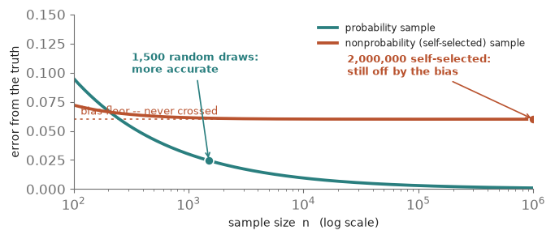
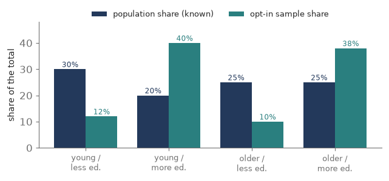
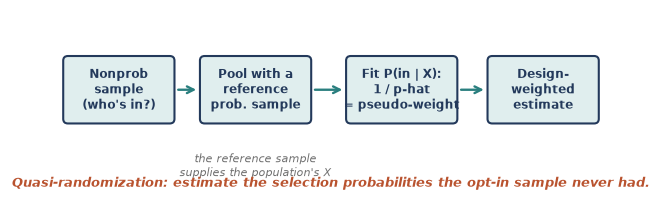
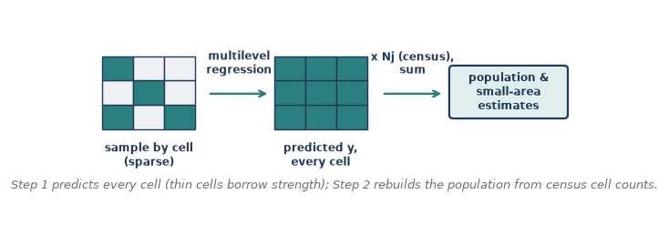
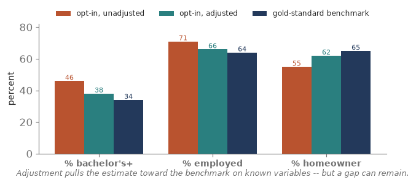

Module 9: Nonprobability Sampling
Sampling Refresher · making a case for the population when nobody drew a lottery
Everything in Modules 0 through 8 rests on one foundation: a probability sample, where every unit has a known, nonzero chance of selection. That known random mechanism is what buys design weights, near-unbiased estimates, and honest standard errors. But a great deal of modern data has no such mechanism — opt-in web panels, social-media streams, customer lists, convenience and ‘river’ samples. Nobody drew them with a lottery; people selected themselves. Module 9 asks the uncomfortable question: when a probability sample is not feasible, can we still say something valid about the population? The answer is a careful ‘sometimes, if…’ — and this module is about the if. Six pieces of concept, then a hands-on seventh in R.
Piece 1 — What breaks without probability sampling
Strip away the known selection mechanism and the whole machine from Modules 1-8 stops turning.
- No selection probabilities, no design weights. The estimator loses its built-in guarantee of pointing at the population value — there is no 1/pi to expand the sample back to the whole.
- The real danger is selection bias. Self-selection is usually correlated with what we measure: politically engaged people answer political polls; healthy people join health apps. The sample tilts, and the estimate tilts with it.
- Big n does not save you. With a probability sample, error shrinks like 1/sqrt(n) toward zero. With a biased sample, error shrinks toward a bias floor it can never cross. A bigger biased sample is just a more precise wrong answer — the big-data paradox: a tiny random sample can beat a massive self-selected one.
In Total Survey Error terms, you have traded a controllable sampling error for a much harder-to-see selection / coverage bias. That trade is the whole subject of this module.

Check yourself (Piece 1). An opt-in panel has 2 million respondents; a probability survey has 1,500. Which do you trust more for a population estimate, and what single fact decides it?
Piece 2 — When can you fix it? (the ignorability idea)
Nonprobability samples are not hopeless — but the rescue rests on a strong, untestable assumption.
- The condition (ignorable selection). A cousin of ‘missing at random’: once you condition on a set of covariates X, being in the sample is unrelated to the outcome y. Within each X-cell, the responders look like the population.
- You need rich covariates X that drive both who selects in and the outcome. Age and sex alone rarely suffice.
- You need a benchmark — the population distribution of X, from a census or a gold-standard survey — so you know what to correct toward.
- The fundamental limit. If selection depends on something you did not measure (and cannot proxy), no method fixes it. That is why nonprobability inference is always an argument, never a guarantee.
Given ignorability, two strategies follow, attacking from opposite ends: model who is in the sample (pseudo-weights, Piece 3) or model the outcome itself (MRP, Piece 4).

Check yourself (Piece 2). You adjust an opt-in health survey for age and sex, but sicker people are likelier to join even within age-sex groups. Is selection ignorable here, and what happens to your adjusted estimate?
Piece 3 — Quasi-randomization and pseudo-weights (model the selection)
The first strategy pretends the nonprobability sample was a probability sample all along — with selection probabilities we simply have to estimate.
- The quasi-randomization idea. Treat ‘being in the opt-in sample’ as an outcome to model.
- The recipe. Stack your nonprobability sample with a reference probability sample (or the population). Fit a model — usually logistic regression — predicting membership in the nonprobability sample from covariates X. The fitted values are estimated inclusion propensities.
- The pseudo-weight is 1 / (estimated propensity) — exactly the base-weight logic of Module 6: rarely-selected profiles stand for many. From there you analyze with the design-based weighting machinery you already know.
- A simpler cousin: calibration / raking (Module 6 again). Skip the propensity model and just rake the sample to known population totals on X. Easier, but it only corrects the margins you rake on.
Cautions. The weights are estimated, so standard errors must account for that (replication, Module 7); extreme pseudo-weights inflate variance (deff_w) and often get trimmed; and everything hinges on X capturing what drives selection.

Check yourself (Piece 3). Pseudo-weighting needs a second data source the raw opt-in sample doesn’t contain. What is it, and what job does it do?
Piece 4 — MRP: multilevel regression with poststratification (model the outcome)
The second strategy ignores selection probabilities entirely and instead models what people say, then rebuilds the population from a census. MRP does this in two steps.
- Step 1 — multilevel regression. Predict the outcome y from covariate cells (age x region x education, …) using a multilevel / random-effects model, so small, sparsely sampled cells borrow strength from the overall pattern instead of being trusted on their three respondents. You get a stable predicted y for every cell in the grid.
- Step 2 — poststratification. Weight each cell’s predicted y by that cell’s known share of the population (from a census poststratification table) and add them up. The population’s composition, not the sample’s, drives the total.
Why it is powerful. It excels at small-area estimation — credible state-by-state opinion from a single national sample — and it stays robust when cells are thin. It famously produced accurate state-level election forecasts from a wildly unrepresentative sample of Xbox gamers.
Requires: a poststratification frame (population counts for every cell) and covariates that genuinely predict y.
Pseudo-weights vs. MRP: one models who is in; the other models what they’d say. They are complementary — and modern doubly robust methods combine both, giving you two chances to be right.

Check yourself (Piece 4). In MRP, where does the population actually enter — the regression step or the poststratification step — and why does that placement matter?
Piece 5 — Assessing the bias (how do you know it worked?)
Here is the humbling part. A probability sample certifies its own precision from the design. A nonprobability estimate cannot — you have to build a case that the residual bias is small.
- Benchmark against knowns. Compare your adjusted estimates to gold-standard external figures (census, big federal surveys) on variables you do know. If it misses on the knowns, distrust it on the unknowns.
- Sensitivity analysis. Re-estimate under different covariate sets and models. If the answer swings, it is fragile; if it holds, you have more confidence.
- Covariate balance. Check that, after weighting, the sample’s X-distribution actually matches the population’s.
- Variance from the weights. Estimated pseudo-weights inflate variance (deff_w and n_eff from Modules 6-7); a large effective-sample-size loss is its own warning.
- State the assumption out loud. Name the ignorability assumption plainly: ‘we assume selection is unrelated to y given these covariates.’ It is untestable, so disclosing it is part of the deliverable.

Interview anchor (Pew). This is home turf for the roles you are targeting. Pew Research Center runs its American Trends Panel as a probability-based online panel — recruited by national random sampling of addresses — precisely to sidestep the self-selection problem in this module. And Pew’s own published evaluations of online opt-in samples found that weighting narrowed the gap to known benchmarks but did not close it, with residual bias uneven across subgroups — a real-world version of this piece. Expect to be asked how you would judge whether an opt-in sample is fit for purpose.
Check yourself (Piece 5). Your adjusted opt-in estimate matches the census on age, sex, and education, but you never measured political interest. What can benchmarking tell you here, and what can it never tell you?
Piece 6 — Choosing an approach
No method conjures a probability sample out of thin air; you pick the tool that best fits your covariates, your benchmark, and your target.
| Approach | Models… | Needs | Shines when… |
|---|---|---|---|
| Probability sample | nothing (design does it) | frame + fieldwork | you can afford the gold standard |
| Pseudo-weights | who is in the sample | reference prob. sample + X | you have a good reference sample |
| MRP | the outcome y | census frame + predictive X | small areas, thin cells |
| Calibration / raking | the margins only | known population totals | a quick, transparent fix |
Rule of thumb. A rich reference sample points to pseudo-weights; a strong census frame and small-area targets point to MRP; when you have both, combine them (doubly robust). Whatever you choose, benchmark the result — that is the non-negotiable step.
Check yourself (Piece 6). You want state-level estimates from a national opt-in sample and you have census cell counts. Which approach is the natural fit, and why?
Piece 7 — Doing it in R
No single package ‘does nonprobability sampling’; you assemble a few. Here is the shape of each workflow — pseudo-weights, MRP, and a balance check.
Read-along, not run. R is not yet installed on your machine, so treat this piece as a reference — every line is ready to run the moment we set R up.
1. Pseudo-weights (quasi-randomization, Piece 3). Pool the opt-in sample with a reference probability sample, model membership, invert the propensity.
pooled <- rbind(nonprob, refsamp) # stack opt-in (inNP=1) + reference (inNP=0) m <- glm(inNP ~ age + educ + region, family = binomial, ~data = pooled, weights = ref_wt) phat <- predict(m, nonprob, type = “response”) # inclusion propensity nonprob$psw <- 1 / phat # pseudo-weight = 1 / p-hat des <- svydesign(ids = ~1, weights = ~psw, data = nonprob) svymean(~y, des)
Or a modern one-call package that also gives doubly robust options:
library(nonprobsvy) nonprob(selection = ~ age + educ + region, # model who’s in target = ~ y, data = nonprob, svydesign = ref_design)
2. MRP (Piece 4). A multilevel model, then poststratify predictions to census cell counts.
library(lme4) fit <- glmer(y ~ (1|state) + (1|age) + (1|educ) + repvote, # step 1: partial pooling ~data = samp, family = binomial) post$pred <- predict(fit, post, type = “response”, # predict every census cell allow.new.levels = TRUE) est <- with(post, sum(pred * Nj) / sum(Nj)) # step 2: poststratify to N_j
(For thin cells, the Bayesian version — brms::brm or rstanarm::stan_glmer — behaves better.)
3. Check covariate balance (Piece 5).
library(cobalt) bal.tab(inNP ~ age + educ + region, data = pooled, weights = “psw”)
Each concept, and the R that does it
| Concept (piece) | R |
|---|---|
| Pseudo-weights (P3) | glm() + svydesign() , or nonprobsvy::nonprob() |
| Calibration / raking (P3) | survey::calibrate() / rake() |
| Multilevel regression (P4) | lme4::glmer() , or brms / rstanarm (Bayesian) |
| Poststratification (P4) | sum(pred * Nj) / sum(Nj) over census cells |
| Balance / bias check (P5) | cobalt::bal.tab() |
Check yourself (Piece 7). In the MRP code, what does allow.new.levels = TRUE let the model do, and why is that the whole point of the multilevel step?
Coursework anchor (625 / 745)
Nonprobability inference is the frontier of the Survey & Data Science world — the material that appears the moment a client cannot afford a full probability sample but still wants a population number. It leans on every earlier module at once: weighting (6), design-based variance (7), and the honest accounting of bias versus variance (0). It is also the methodological heart of the applied roles you are targeting, where opt-in panels, voter files, and modeled audiences are everyday inputs. The hands-on layer — fitting the propensity and multilevel models in R — is the next time we open it.
Interview angles
- Can you trust an opt-in online poll? Only under an ignorability assumption — selection unrelated to the outcome given measured covariates — plus good covariates and a benchmark. Big n doesn’t help; it just makes the bias precise (the big-data paradox).
- Pseudo-weights vs. MRP? Pseudo-weights model selection (propensity of being in the sample, via a reference probability sample); MRP models the outcome and poststratifies to census cells. Complementary — combine for double robustness.
- What is MRP, and when would you use it? Multilevel regression + poststratification: it partial-pools sparse cells and rebuilds the population from a census — ideal for small-area estimates from a nonrepresentative sample.
- How do you validate a nonprobability estimate? Benchmark against known external totals, run sensitivity analyses, check covariate balance and the effective sample size, and state the untestable selection assumption plainly.
- Why can’t weighting fully fix an opt-in sample? Weighting can only correct imbalance on variables you measured and have population totals for; selection on unobserved factors is untouched.
- When is nonprobability defensible? When probability sampling is infeasible or too costly, you have rich covariates and a solid benchmark, and the stakes tolerate an assumption-based estimate — with the assumptions disclosed.
Quick check
- In one sentence, why doesn’t a huge sample size rescue a self-selected sample?
- Name the untestable assumption that all nonprobability adjustment relies on.
- Pseudo-weighting: what second data source do you need, and what do you model with it?
- MRP has two steps — name them, and say which one uses the census.
- Give two ways to build evidence that a nonprobability estimate’s residual bias is small.
Module 9 in one breath
- Nonprobability samples have no known selection mechanism, so self-selection breeds selection bias — and big n only makes the bias precise (the big-data paradox).
- Adjustment is possible only under ignorability: selection unrelated to y given measured covariates X, plus a population benchmark for X.
- Pseudo-weights (quasi-randomization) model who’s in the sample — 1 / estimated propensity, via a reference probability sample — then reuse design-based weighting.
- MRP models the outcome with a multilevel regression, then poststratifies predicted cell values to census counts; great for small areas and thin cells.
- You can never certify a nonprobability estimate from the design — benchmark it, test its sensitivity, check balance, and state the assumption out loud.